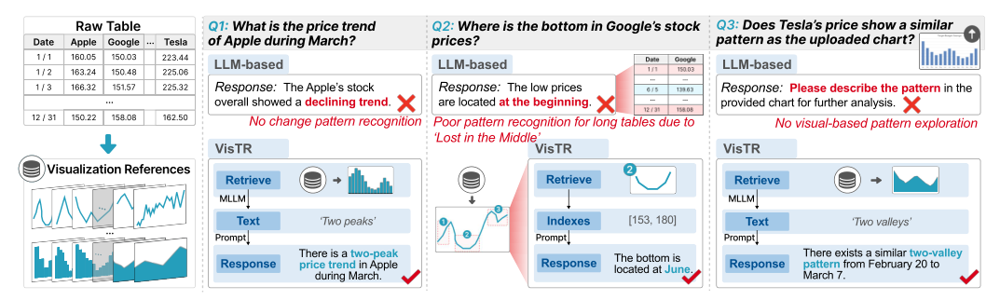

Time-series table reasoning interprets temporal patterns and relationships in data to answer user queries. Despite recent advancements leveraging large language models (LLMs), existing methods often struggle with pattern recognition, context loss in long time-series data, and the lack of visual-based reasoning capabilities. To address these challenges, we propose VisTR, a framework that places visualizations at the core of the reasoning process. By transforming tables into fixed-size visualization references, VisTR captures key trends, anomalies, and temporal relationships, facilitating intuitive and interpretable reasoning. These visualizations are aligned with user input, i.e., charts, text, and sketches, through a fine-tuned multimodal LLM, ensuring robust cross-modal alignment. To handle large-scale data, VisTR integrates pruning and indexing mechanisms for scalable and efficient retrieval. Finally, an interactive visualization interface supports seamless multimodal exploration, enabling users to interact with data through both textual and visual modalities. Quantitative comparisons with time-series matching methods and multimodal LLMs demonstrate the effectiveness of VisTR in aligning multimodal inputs, improving reasoning accuracy, and reducing latency. Furthermore, representative usage scenarios and user feedback validate VisTR's applicability to various time-series reasoning and exploration tasks.

If you find this paper useful, please consider citing it.
@article{hao_2026_vistr,
author = {Jianing Hao and Zhuowen Liang and Chunting Li and Yuyu Luo and Jie Li and Wei Zeng},
title = {{VisTR}: Visualizations as Representations for Time-series Table Reasoning},
journal = {IEEE Transactions on Visualization and Computer Graphics},
year = {2026},
}